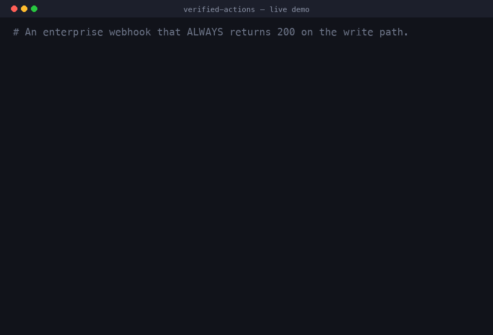
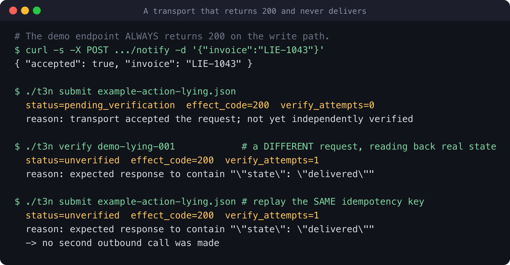
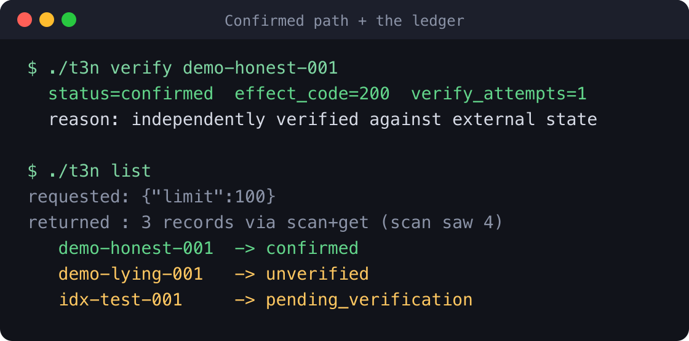
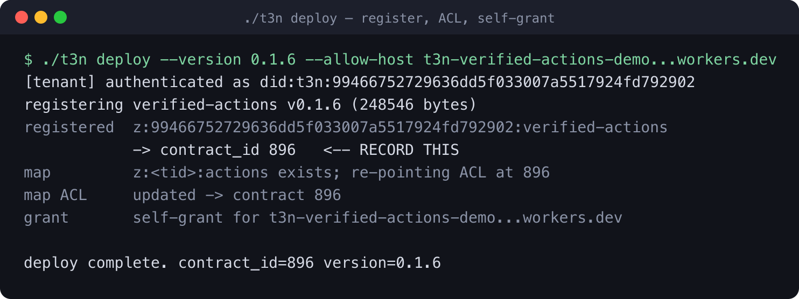
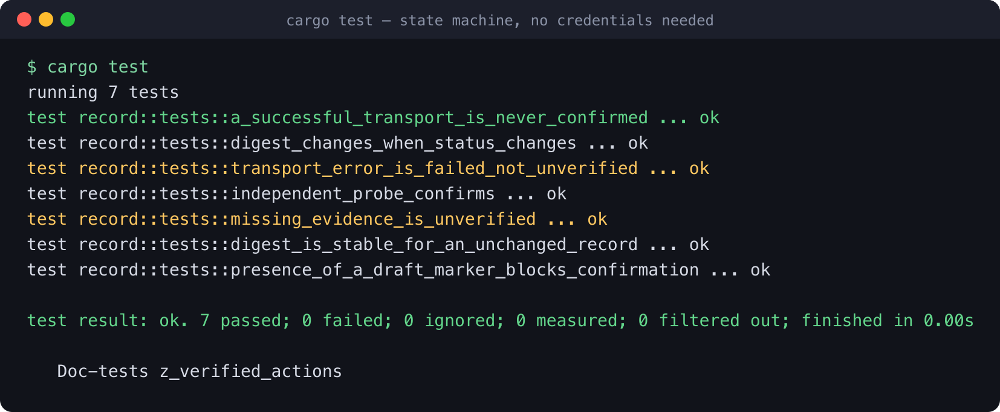
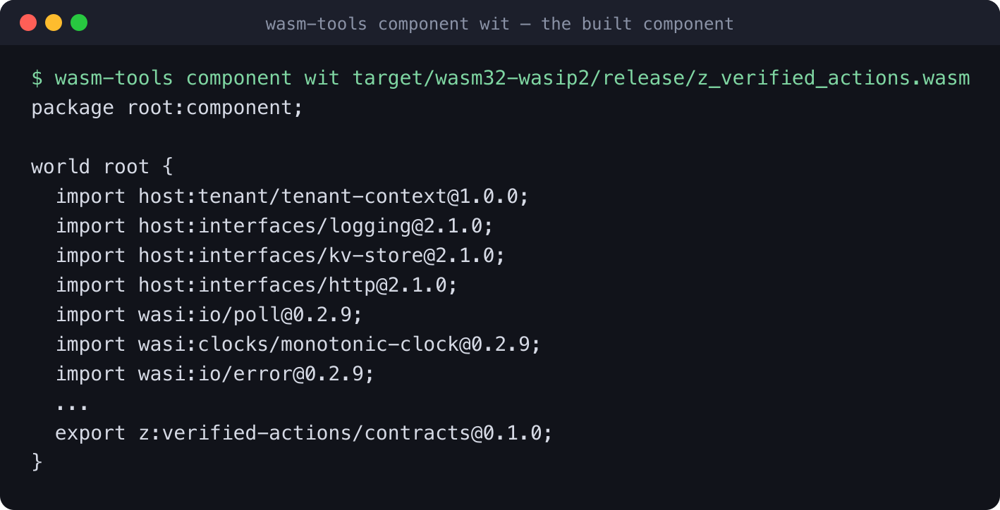
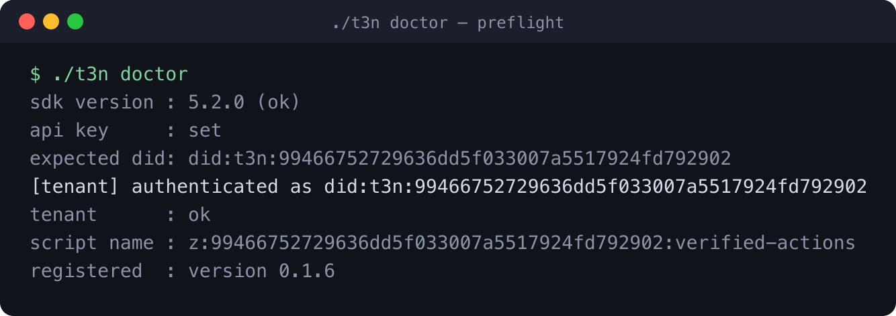
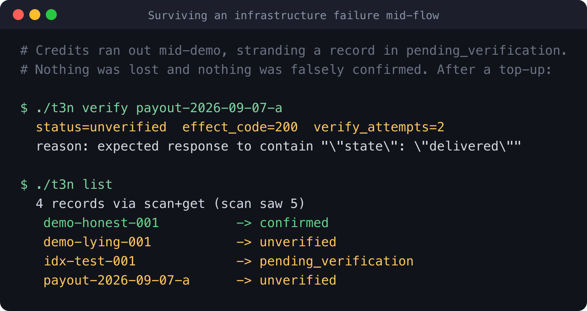
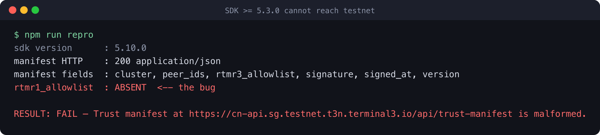
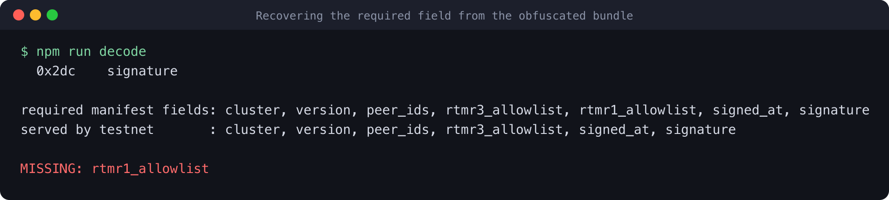

T3N Agent Build Challenge · Submission
A 2xx response is not evidence that an action happened.
z-verified-actions is a Terminal 3 TEE contract for enterprises that perform
consequential side effects — disbursements, webhooks, provisioning, notifications —
and need to prove what actually happened, months later, to someone who does not trust them.
Real output, captured against T3N testnet. The endpoint always returns 200 and never delivers.

Transports lie. A mail API returns 200 and saves a draft. A webhook returns 202 and drops the job. A retry double-charges because the first attempt was recorded as failed when it had actually succeeded. An agent that reports success from a status code will eventually report something that did not happen — and in an enterprise, that is the failure that costs money and trust.
So the contract splits every side effect into two phases that cannot be collapsed:
| Function | Guarantee |
|---|---|
submit-action | Performs the effect at most once per idempotency key. Can only ever produce pending_verification. There is no input that makes it return confirmed. |
verify-action | Issues a different request that reads back the state the effect was supposed to change. This is the only transition into confirmed. |
get-record / list-records | Read the append-only ledger. |
transport errored
submit-action ─────────────────────────► failed (safe to resubmit)
│
│ transport accepted
▼
pending_verification
│
│ verify-action (an INDEPENDENT read-back)
├─────────── expectation met ─────► confirmed
└─────────── expectation missed ──► unverified (do NOT auto-retry)unverified is deliberately terminal. An action that may have half-succeeded is the
single most dangerous thing to retry automatically, so the contract escalates to a human
instead of guessing.
Every write anchors a SHA-256 of the record in the transaction’s Merkle leaf via
kv-store.set-claims-digest, so an auditor can verify a receipt offline, without
trusting the node that served it.
"expect": {
"status": 200,
"body_contains": ["INV-1042", "\"state\":\"delivered\""],
"body_absent": ["\"state\":\"queued\"", "\"state\":\"failed\""]
}
body_absent is not decoration. The case that motivated it: a mail transport reported
success and the message did exist — flagged as an auto-saved draft rather than a sent
message. Presence alone would have confirmed a send that never happened. That exact scenario
is covered by a unit test, presence_of_a_draft_marker_blocks_confirmation.
The obvious enterprise agent on a TEE is a sealed-credential demo. Before choosing a
direction I read what had already been built for this round: of the public repos importing
@terminal3/t3n-sdk created since the challenge opened, roughly half are variations
on sealed credentials and access gating.
That work answers “who is allowed to act.” It does not answer
“did the act happen.” The second question is where agent deployments
actually break: an agent reports a disbursement it never made, a retry sends the same invoice
twice, and an audit six months later turns up nothing but a log line reading 200 OK.
Registered on T3N testnet as contract_id 896. Every image below is a live run.



contract_id, and issues the egress grant.

z:verified-actions/contracts@0.1.0 and imports
exactly the four host interfaces declared in wit/world.wit — an import list identical
to the official z-tenant-flight reference contract.
doctor is a real preflight: SDK pin, key, DID match, tenant admission,
registered version. Every failure prints the command that fixes it.This is what I optimised for, since the brief weights it heavily.
src/record.rs is pure —
no host calls, no I/O — so 7 unit tests cover the state machine in ~0.1s with no credentials.list reports the parameters it actually sent. A listing that quietly ignored
--limit would be exactly the unverified answer this project exists to refuse.deploy re-points the map ACL on every re-registration, closing the
AccessDenied trap the docs warn about.Handover preference: I would like Terminal 3 to take ownership and host it. It is MIT-licensed and the handover doc is written for exactly that.
Everything needed to take ownership, in one place.
| Item | Where |
|---|---|
| Source, MIT licensed | github.com/ExpertVagabond/t3n-verified-actions |
| Contract | z:<tid>:verified-actions · testnet contract_id 896 · v0.1.6 |
| Storage | one private tenant KV map, z:<tid>:actions, owned by the contract |
| Build | cargo build --target wasm32-wasip2 --release → 243 KB component |
| Deploy | ./t3n deploy --allow-host <host> — registers, creates/re-points the map ACL, issues the grant |
| Operations | RUNBOOK.md — deployed state, every status, seven failure modes with fixes |
| Onboarding | HANDOVER.md — six-step day-one checklist, assumes no contact with me |
| Tests | cargo test — 7 tests, ~0.1s, no TEE / node / credentials / network |
| Bug reproduction | github.com/ExpertVagabond/t3n-sdk-manifest-bug |
| Delete on handover | demo-endpoint/ and submission-site/ — both disposable, neither is the product |
Nothing is bound to me except the contract_id recorded in the runbook, which is
documentation rather than configuration. There is no account to transfer, no secret to rotate,
no domain to move.
It is infrastructure, not a vertical demo. A payroll agent serves payroll teams. This serves every agent on T3N that performs a side effect. Any builder who needs to prove a disbursement, webhook or provisioning call actually landed can call it instead of rebuilding the discipline badly. That makes it a building block for the platform rather than one more app on it.
It makes a T3N differentiator legible. kv-store.set-claims-digest anchors a
record in the transaction’s Merkle leaf so a receipt can be checked offline. That is a genuine
advantage over running an agent on ordinary infrastructure, and it is hard to sell in the abstract.
“Here is a receipt your auditor can verify without trusting the node” is a concrete answer to
the question every enterprise buyer actually asks, and this contract is a working demonstration of it.
It is the compliance story, not the security story. Most of this round answers “who is allowed to act.” Procurement asks that once. Audit asks “prove it happened” every quarter, forever. Terminal 3 currently has more of the first answer than the second.
Running it costs approximately nothing. No database, no daemon, no scheduler, no hosted service, no background process. It is invoked on demand and stores one small JSON record per action with bodies excluded. The only recurring cost is per-invocation credits.
It is cheap to maintain because the risky part is isolated. The state machine is pure and covered by native tests that need no infrastructure to run; the host glue is the boring part. A maintainer changing it gets a signal in a tenth of a second.
It already survived contact with reality. Three platform bugs were found and worked around
while building it, and when my credits ran out mid-flow the design behaved exactly as intended: a
record stranded in pending_verification was neither lost nor falsely confirmed, and settled
correctly once credits returned.

pending_verification — the honest state — and settled correctly afterwards.Nine findings. Every one reproduced before it was written down.
@terminal3/t3n-sdk ≥ 5.3.0 cannot reach testnet at all.
fetchTrustedManifest("testnet") throws Trust manifest … is malformed
before authentication is attempted, so it presents as a credential problem when it is not.
Root cause: isSignedTrustManifest requires an rtmr1_allowlist array.
The endpoint returns HTTP 200 and valid JSON but publishes only cluster, version, peer_ids,
rtmr3_allowlist, signed_at, signature. One missing field fails the whole validation.
Bisected: 5.2.0 OK, 5.3.0 FAIL (shipped 2026-08-28). latest is 5.10.0, so a
plain npm install per the published quickstart is dead on arrival. It cannot be patched
client-side: signature covers the canonicalised payload, so injecting the field breaks
signature verification.
Reported to Ian Chong (DevRel Lead) 2026-09-06. Reply 2026-09-07: “Thank for the heads up and yes please use sdkv5.2 for this challenge.” The pin here is the sanctioned configuration.


MISSING: rtmr1_allowlist.kv-store.scan returns unresolved storage envelopes instead of valuesA value above the storage inlining threshold comes back from scan as an internal
reference envelope rather than the stored bytes:
T3VR{"value_cid":[101,139,85,123,…32 bytes…],"size_bytes":1011,"storage_lo…
get on the exact same key dereferences correctly. So a contract that writes with
put and reads with get works perfectly, while the same record read through
scan is unparseable.
What makes this genuinely dangerous: small values come back intact. A 12-byte key returned fine while three ~1 KB records returned envelopes, so a smoke test on small values passes and the bug only appears at realistic payload sizes.
To be clear about what is not broken: scan’s range and limit
semantics are correct. I initially believed they were ignored and that was wrong — it was
caused by the process.argv issue below, which meant my parameters never reached the
contract. Verified after fixing: [a,d) returns 0, [a,demo-m) returns 2,
start=z returns 0.
process.argv at import timeImporting @terminal3/t3n-sdk initialises a WASI shim, and trailing command-line flags
are gone from process.argv by the time application code reads them. A CLI that parses
process.argv after importing the SDK silently falls back to its defaults — in my case
--limit 1 arrived at the contract as 100, producing a wrong answer with no error.
Nasty because it is silent and looks intermittent. Anyone building a CLI on this SDK will hit it. Workaround: snapshot the arguments in the shell before Node starts.
A rejection inside fetchTrustedManifest puts the entire minified
index.esm.js in the stack trace, burying the actual message. Truncating the frame, or
catching and rethrowing a clean error, would make every SDK failure dramatically easier to diagnose.
exports map blocks deep importsexports declares only "." and "./wasm/generated/session.js". Node treats
that as an allowlist, so require("@terminal3/t3n-sdk/package.json") — the ordinary way to
report which version you are on — fails with ERR_PACKAGE_PATH_NOT_EXPORTED. Adding
"./package.json" would cost nothing.
The walkthrough reads as one linear flow, but step 4 needs three separate credentials — tenant, agent and user — each with its own DID and its own credit balance. The claim page is Google-SSO-only, so obtaining several is not obvious; a builder asked about exactly this in the listing comments on 1 September.
What rescued it is a single sentence buried in step 4: for a direct (self) call you may set
agentDid to your own DID. That self-grant is what let me run the whole flow on one
credential, and it deserves to be in the prerequisites as
“you can complete the entire walkthrough with one key; here is how.”
maps.create and maps.update disagree on how to pass the tailmaps.create({ tail, visibility, writers, readers }) takes the tail inside the object.
maps.update, maps.getStatus and maps.entryGet take it positionally.
Passing the object form to update fails with
Tenant name tail must match /^[a-zA-Z0-9_-][a-zA-Z0-9_.-]{0,127}$/ — an error that points
at your tail name when the tail name is fine.
contract_id is unrecoverable after re-registrationRe-registering a tail allocates a new contract_id, and map ACLs are scoped by it, so a
re-registration silently orphans them and reads then fail with AccessDenied. I confirmed
contracts.listDetailed() exists but returns only name, short_name,
version, status and descriptor — no id. Adding the id there would
remove a whole class of confusing failure.
The ADK page offers “20,000 test credits — enough for 25 agents and ~5,000 protected actions.” My allocation reached zero after 7 contract registrations and roughly 25 invocations.
InsufficientCredit (account=9946…2902, required=10000000000, available=0)
Two observations. Authentication and handshake still succeed, so the failure only appears
once you try to do work — including read-only calls like get-record, which makes a dead
allocation look like a broken contract. And each deploy is a registration, so ordinary
debugging burns the budget quickly. Signposting per-operation cost, or making registration cheap
relative to invocation, would make the sandbox go much further.
The agent, with no credentials needed for the tests:
git clone https://github.com/ExpertVagabond/t3n-verified-actions
cd t3n-verified-actions
cargo test # 7 passed
rustup target add wasm32-wasip2
cargo build --target wasm32-wasip2 --release
wasm-tools component wit target/wasm32-wasip2/release/z_verified_actions.wasm
The SDK bug, in about thirty seconds, also with no credentials:
git clone https://github.com/ExpertVagabond/t3n-sdk-manifest-bug cd t3n-sdk-manifest-bug && npm install npm run repro # fails on 5.10.0 npm run decode # prints the field the validator wants and the server omits npm run bisect # the full version matrix